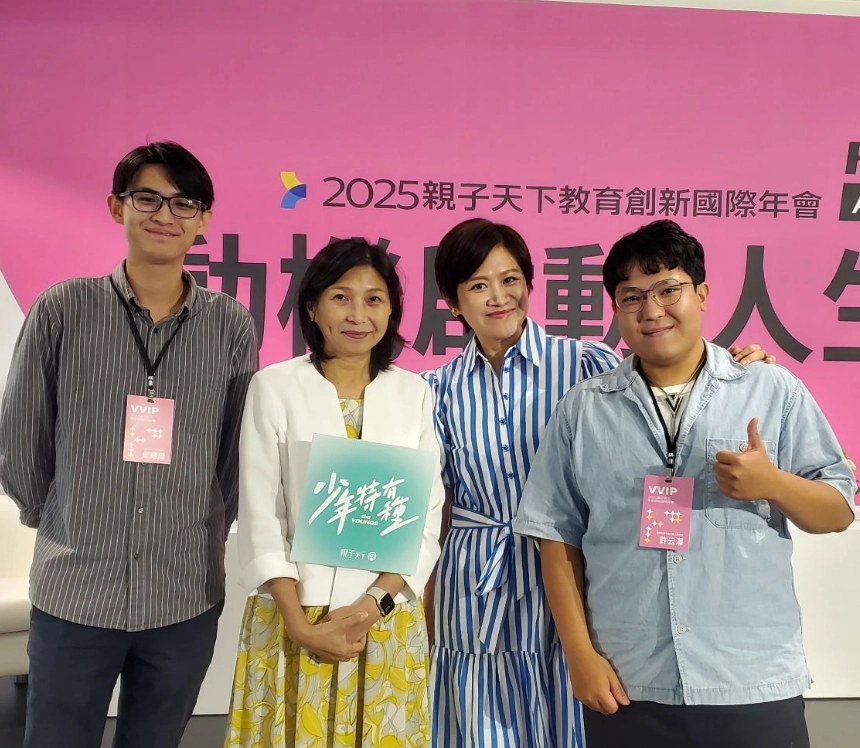
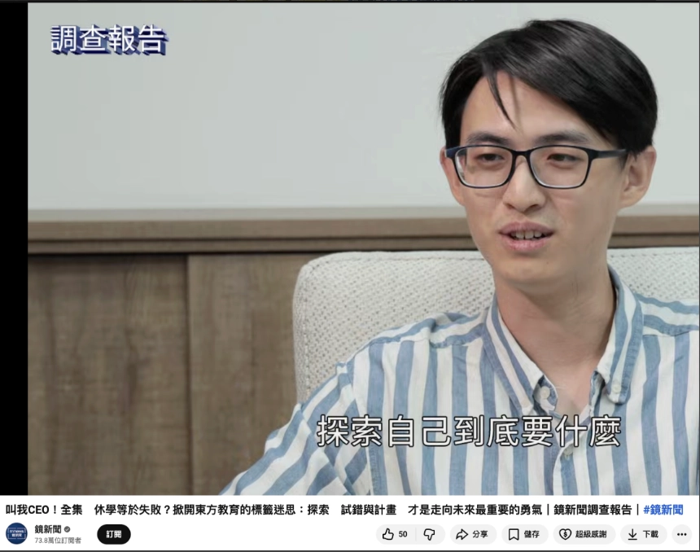

RESETSTUDIO
×
 reset your life, enrich your life
reset your life, enrich your life
一套公益型 AI 自主探索系統：把高品質生涯探索，
從少數人的特權，變成每個高中生都能取得的基礎教育支持。
想像一下，如果愛因斯坦從來沒有機會接觸物理，他也許只會被看見是一位普通的專利局職員。
如果賈伯斯從來沒有接觸電腦、設計與創作，他也許只是一個不適應傳統教育體制的叛逆學生。
很多人的天賦，不是一開始就會被看見的。它需要被觸發、被探索、被驗證，也需要有人或一套系統，幫他把模糊的興趣變成可行的方向。
這不是少數個案——公開調查與升學輔導資料都指向同一件事：
換句話說：很多學生不是不努力，而是在做出重要選擇之前，還沒有足夠機會真正探索自己。
問題不是學生沒有潛力，而是他們的潛力常常沒有被看見、被觸發、被驗證。
在台灣，到底有多少高中生其實有自己真正擅長、真正會被點燃的方向——可能是某個學科、某種技能、某個想解的問題——但因為沒機會接觸、沒資源、也沒人帶，最後就走不到那條路？
現在不是缺資源，而是缺一套能把資源、資料與行動串起來的探索系統。
公益性 AI 自主探索系統會把學生的測驗、經驗、行動、對談與反思，整理成可檢視、可調用、可協作的探索資料庫。
真人不被取代，而是回到真實經驗、複雜判斷、情緒支持與關係陪伴。
這套系統讓學生在真人服務結束後，也能持續整理自己、探索方向、設計行動與復盤修正。
DreamMore 可以成為第一個公益試點，驗證「AI 規模化 × 真人深度陪伴」的新模型。
今天高中生並不是完全沒有生涯探索資源。
相反地，學生身邊其實有很多資源：
但現場真正的問題是：
這些資源大多各自處理一小段，沒有被串成一條完整的探索路徑。
一位高中生可能經歷這樣的過程：
看起來他接觸了很多資源，但實際上：
於是，這些原本應該幫助學生探索自己的資源，最後常常變成另一個升學作業：
如果把現有方案攤開來看，會發現它們各自補上一塊缺口，但沒有任何一種方案同時做到「低成本、長期、個人化、能累積資料、能和真人協作」。
把高中生能接觸的主要資源放進「成本 × 陪伴深度」兩軸——點擊圖中圓點，或下方任一方案膠囊 查看它的代表例子、主要優點與缺口。金色高亮處＝本提案要補上的「低成本 × 高陪伴」空白象限。
＊定位圖為示意，用於呈現各類方案在「成本／陪伴深度」兩軸上的相對位置，非精確量測。
因此，現有方案的共同缺口不是「沒有價值」，而是「沒有整合」。
具體來說：
更進一步說，現在的生涯探索也有嚴重的「資料孤島」問題：
這造成兩個問題：
而是一套能幫學生「使用資源」的探索系統：
如果問題不是資源不足，而是資源沒有被串成探索系統，那下一步就不是再增加一個測驗、平台或營隊，而是設計一套能長期整合資料、引導行動、串接真人的公益性 AI 自主探索系統。
真正高品質的生涯探索需要深度個人化、長期陪伴與資料高度整合。這通常只有真人教練、高品質探索營，或像 DreamMore 這類重視真人陪伴的公益計畫比較有機會做到。但這些方式即使做得很好，仍然會遇到共同限制：
名額有限、成本較高，也很難讓每位學生在活動前後都持續被陪伴。
學生的測驗、任務、反思、mentor 對談與 Coffee Chat 紀錄，常常散落在不同地方；一旦換 mentor、換老師或跨梯次參與，就很容易重新從零開始。
學生不可能永遠被同一位 mentor 或老師陪著。當活動結束、mentor 更換、老師不再陪伴時，學生需要知道怎麼整理自己、使用資源、形成假設、設計行動與復盤修正。
有些學生還說不清楚自己的迷惘，也不一定敢直接向真人開口。AI 可以先低門檻承接，陪學生整理初步問題；等學生準備好了，或真的卡住了，再把真人帶進來。
所以，生涯探索不該只是單點式服務，而應該是一種能被長期練習的能力。學生需要的不只是某一次被 mentor 帶著走，而是即使在真人服務之外，也能持續整理自己、查找資源、形成假設、設計行動與復盤修正。
公益性 AI 自主探索系統的價值，不是把真人服務變成 AI 服務，而是把過去最難規模化的「資料整理、流程推進、行動追蹤、反思累積」交給系統承接。這套系統的核心，不是「再做一個 AI 聊天機器人」，而是：
這套系統和一般 AI 聊天工具最大的差異，是學生的探索資料會不會被整理成一套可檢視、可調用、可協作的探索資料庫。 一般 AI 聊天工具常見的限制是：資料多留在學生自己的聊天視窗裡，摘要需要學生自行搬運，整理品質也取決於學生怎麼問、AI 怎麼整理； 更重要的是，它通常缺少固定的生涯架構，也很難讓學生、老師、mentor、諮詢師與業師圍繞同一份資料協作。
把高品質探索陪伴從高資源家庭的特權，降到每個學生都有機會使用。
不是一次諮詢，而是能從高中延伸到大學、實習、求職與人生下一階段。
學生迷惘、活動前後、寫學習歷程前，都能立刻得到引導。
整合過去所有測驗、反思、行動、學習歷程與老師／mentor 摘要，避免資料四散。
每次對話都被放進探索假設、行動驗證、復盤反思與學習歷程轉化的流程裡。
同一份資料可轉成學生的下一步、老師的輔導摘要、mentor 的會前脈絡。
所以，這不是「把 ChatGPT 放進生涯探索」，而是把 AI 對話變成一套可以協作的探索資料系統：它用生涯架構引導學生，把探索結果寫回資料庫，讓學生、老師與 mentor 能圍繞同一份資料討論，並讓每一次探索都成為下一次判斷的基礎。
這套系統不是純 AI 服務。它真正的價值，是把 AI 和真人放在各自最適合的位置。真人的真實經驗無可替代——AI 無法真正取代一位學長姐、mentor、老師或職人親口說出：「我走過這條路，現場其實長這樣。」而生涯議題從來不只是「選科系」，學生卡住的背後常同時有家庭期待、經濟壓力、情緒狀態、學業挫折、同儕比較與自我認同。
AI 處理規律、重複、可結構化、需要長期累積的探索工作；真人處理真實經驗、複雜判斷、情緒支持與關係陪伴。
過去高品質生涯探索比較像是「真人一個一個牽著學生走」。這很有溫度，也很有價值，但很難規模化：每個學生都要重新說一次背景，每一次行動都要靠真人提醒，每一次反思都要靠真人帶著整理。我想做的，不是讓 AI 替學生走路，而是讓學生逐步學會使用探索工具，從被人牽著走，變成能自己前進：
真人的角色不是消失，而是變得更關鍵：老師、mentor 與諮詢師不再把大量時間花在重新蒐集資料、提醒任務、整理初稿，而是陪學生練習操作工具、判斷路況、控制風險，並在情緒、家庭、現實限制與重大選擇上提供支持與校準。
一套公益性 AI 自主探索系統，讓學生在真人服務之外，也能擁有負擔得起、可長期使用、能整合資料的探索工具；即使離開某一段真人陪伴，仍然能帶著自己的探索檔案與方法，繼續面對新的迷惘。
這套系統不會一開始就問學生：「你想念什麼科系？」
它會先從學生已經做過的心理測驗、學習經驗、活動紀錄與迷惘開始，陪他一步步完成探索循環。
這套流程可以分成 SELF 四個階段，並由 八個 AI 教練模組 陪學生走完一整圈。下面的總覽圖會直接呈現每個階段「AI 先做什麼、真人何時介入、產出什麼」。
點擊環上任一階段，查看該階段「AI 先做什麼、真人何時介入、產出什麼」。
點擊上方探索循環的任一階段，右側會列出對應的 AI 教練模組——點選即可跳轉至該模組並高亮顯示。
學生先從心理測驗、興趣量表取得第一批自我認識線索；《自我探索 AI 教練》再從結果出發，陪學生釐清：
目標不是直接給答案，而是先讓學生把模糊的迷惘說清楚。
當學生累積初步資料後，AI 不直接下結論，而是把「模糊的適合」拆成可以被驗證的方向。
有了方向後，AI 不是丟一堆資料給學生，而是把職業資訊轉成「能不能繼續探索」的判斷素材。
AI 把方向轉成可驗證的探索假設，避免學生停在「我好像有興趣」的模糊狀態。
探索最容易卡在「知道要做，但不知道怎麼開始」。AI 把任務拆成可以完成的小步驟。
完成任務後，學生可獲得點數、徽章或探索進度回饋，讓探索成為可被鼓勵、可被累積的行動旅程。
Coffee Chat 對高中生很有價值，但門檻也高。AI 先把社交壓力轉成可準備的流程。
行動完成後，AI 帶學生回到原本假設，把經驗轉成可以累積的生涯語言。
上述所有資料都會被存放在同一個學生探索檔案系統中，不再散落在測驗平台、聊天紀錄、文件與個人記憶裡。
未來學生即使離開某個活動或高中場域，仍能繼續使用這套系統面對新的迷惘；遇到新的輔導老師、mentor、諮商師或職涯教練時，也可在學生同意的前提下，把整理過的探索摘要交給對方，讓新的助人者快速接住學生，不用每次都重新說明「我是誰、我經歷過什麼、我以前探索到哪裡」。
這套系統不是要取代 DreamMore，而是讓 DreamMore 原本最珍貴的真人陪伴更有效、更可延續。DreamMore 已經有真人 mentor、Coffee Chat、職涯視野拓展與同儕團體。公益性 AI 自主探索系統要補上的，是現場最難規模化的三件事：
AI × DreamMore＝規模化的探索支持＋有溫度的深度陪伴
AI 負責把探索過程系統化，DreamMore 負責把學生真正接住。
| 對象 | 現在的問題 | 系統帶來的改變 |
|---|---|---|
| 學生 | 探索常常停在「被啟發」，活動結束後不知道下一步該做什麼，也很難自己持續整理自己。 | 學生擁有自己的探索檔案與行動工具，能在活動之間持續整理自己、形成假設、設計行動與復盤，不用每次都從零開始。 |
| DreamMore | 會前準備、會後追蹤與跨梯次資料交接高度仰賴 mentor 個人時間與記憶，難以規模化。 | AI 承接會前整理、會後追蹤與跨梯次交接，讓 mentor 時間集中在真實經驗分享、深度判斷與情緒支持。 |
| 老師／mentor | 每次和學生對談都要重新蒐集背景資訊，難以掌握學生在不同場域、不同時間點的探索脈絡。 | 在學生授權下，可看到整理過的探索摘要與行動紀錄，直接從學生目前的狀態與卡點切入對談。 |
| 學習歷程 | 學習歷程偏向呈現包裝過的成果，較少呈現學生如何一路探索、嘗試、修正的真實歷程。 | 系統能協助學生把自主學習、社團、營隊、Coffee Chat、課程作品與反思整理進一條探索脈絡，成為更真實的學習歷程素材。 |
| 公益教育場域 | 每個場域、每個梯次的探索資源與經驗難以累積、難以複製到其他場域。 | 系統沉澱出可複製的導入流程、資料結構與成效指標，讓經驗能在不同公益教育場域之間延續與擴散。 |
DreamMore 對這套系統來說，是很適合的第一個試點場域：
我不是從零開始提出一個 AI 概念，而是把已經在大學端跑過、驗證過、持續迭代的探索方法，前移到高中端，並用最新 AI 重新設計成更適合高中生與公益場域的版本。
過去幾年，我主要在大學端與新鮮人階段做生涯探索與職涯陪跑，並把這套方法設計成「自主探索陪跑營」。這套陪跑營不是單純上課，而是把「觀念建立、系統操作、任務實作、教練陪跑」整合成一個完整流程：
這個陪跑營已經舉辦 5 屆，不只累積出一套可被系統化的探索流程，也同時驗證了市場需求與教學效果。
付費需求與營收規模：
陪跑營後續延伸半年到一年的長期陪跑服務，也有 5 位學生加購，再累積約 6 多萬元營收。
諮詢與轉換：
教學成效：
這代表：
我之所以相信這套分工可行，是因為我已經在自己的陪跑營裡實際驗證過。
在 5 週課程＋60 天陪跑裡，我需要同時協助 6–8 位學生完成自我探索、職業探索、時間管理、履歷撰寫與復盤優化。
如果所有事情都靠真人一對一完成，很快就會被人力限制卡死。
這套分工背後，其實是一個 AI 時代的教育產品流程：
這樣一來，每次 1 小時諮詢不需要從零問資料或修初稿。AI 先完成基礎盤點與草稿整理，真人則專注在判斷、追問、情緒支持與現實校準。
AI 不取代老師、mentor 或教練，而是讓真人不必浪費時間從零開始，並把學生先整理到一個可以被討論、被回饋、被支持的狀態。
如果只看「會不會用 AI」，這個提案需要的能力遠不只如此——它需要同時理解生涯議題、教育現場、系統設計與真實組織落地。
重點經歷：
| 能力面向 | 為什麼重要 | 具體證據 |
|---|---|---|
| 懂生涯 | 知道學生真正卡住的地方通常不是「不知道資訊」，而是不知道如何把經驗、興趣、能力、家庭期待與未來選擇整理成可行方向。 |
|
| 懂教育 | 知道學生不是看完內容就會改變，而是需要教材、任務、練習、回饋與陪跑，才能把抽象的生涯探索變成可操作的學習歷程。 |
|
| 懂系統 | 這套服務不能只靠靈感式對話，而要把學生資料、任務、反思、摘要與真人協作設計成可檢視、可調用、可延續的資料庫流程。 |
|
| 懂實戰 | 公益試點不是只做出工具，而是要能進入真實組織場域，協調利害關係人、設計流程、落地執行並持續修正。 |
|
很多學生的迷惘不是大學才開始的，只是到了大學、求職或轉職，才第一次認真整理自己。如果這套方法能更早發生在高中，學生就能在選系、自主學習與學習歷程階段，開始累積真正的探索檔案。


如果用一句話說我的創業動機：我是一個看到現況可以更好，就會想去突破的優化者。
這種特質，反映在幾件事上：
這也是我做公益性 AI 自主探索系統的出發點：
我會想從公益場域開始驗證，不是因為這套系統不能商業化，而是因為生涯探索一旦只走純商業市場，很容易被付費方的升學焦慮牽引。
這不只是「誰付得起」的問題，更是「服務內容會被什麼需求牽引」的問題。
均一過去讓每個孩子不論出身，都能取得免費、優質、個人化的學習資源；而這個提案想和均一一起探索下一步：
能不能讓每個孩子不論資源背景，也都能取得個人化的探索支持？
這件事和均一的核心精神非常接近：均一過去處理的是「學科學習不該因出身而受限」，這套系統想處理的是「探索自己與未來也不該因出身而受限」。
生涯探索不該只屬於能付錢買顧問和營隊的家庭。如果每個孩子都不應該因為出身而失去學習機會，那他們也不該因為出身，而失去探索自己、理解未來的機會。
每個學生不同的不只是學習進度，也包括迷惘、經驗、興趣、家庭資源、情緒狀態與未來想像。因此，下一步可以是：從個人化學習，走向個人化探索。
AI 不只可以教知識，也可以陪學生整理問題、形成假設、設計行動、完成反思。這不是把 AI 變成答案機器，而是把 AI 變成學生的探索工具與探索作業系統。
真正的終身學習者，不只是會學科知識，也知道如何認識自己、面對不確定、反思修正，並持續選擇方向。
均一適合成為這件事的合作夥伴，原因不只是有 DreamMore 場域，而是均一本來就站在幾個交會點上：
公益性 AI 自主探索系統如果要避免只變成高價商業服務或升學包裝工具，就需要一個懂教育現場、重視公益使命、也願意探索 AI 新教育型態的夥伴一起定義它。
這也是為什麼我希望和均一談的，不只是「做一個工具」，而是共同驗證：AI 能不能從教知識，延伸到陪學生理解自己、使用資源、完成行動，並在需要人的地方連結真人支持。
第一階段，我希望先驗證一個很實務的問題：
這套已經在我自己的課程與陪跑經驗中驗證過的方法，交給其他學生與其他諮詢師／mentor 使用時，是否一樣有效？如果不一樣，需要調整哪些流程、介面、提示、資料結構與真人節點？
這不是要從零證明「生涯探索有沒有價值」，而是要驗證方法從我個人手上移出去後，是否仍然能被其他助人者使用；學生在沒有我本人陪跑的情況下，是否仍能完成一次探索循環；AI 產出的摘要、任務與反思，是否真的能幫助老師／mentor 更快理解學生。
對象：10–20 位學生與 mentor／老師
要驗證什麼：這套方法交給其他學生與 mentor 使用時是否一樣有效，以及哪些流程、介面、提示、資料結構與真人節點需要調整。
對象：DreamMore 多梯次、合作學校或公益教育場域，約 100–300 位學生
要驗證什麼：同一套會前準備、會後整理、任務追蹤與資料交接流程，是否能在多梯次、多 mentor、多場域中穩定運作。
對象：更多高中、課輔機構與公益教育場域
要驗證什麼：是否能沉澱成可供高中與公益教育場域使用的公益 AI 自主探索模型。
長期來說，我想和均一共同回答的是一個教育平權問題：
AI 能不能把高品質探索，從少數人的特權變成每個高中生都能取得的基礎支持？
我希望和均一合作的，不只是開發一個高中生工具，而是共同完成第一階段試點，驗證這套公益 AI 自主探索模型能否在 DreamMore 場域中被學生與 mentor 實際使用。
用於高中版產品重新設計、AI 對話與探索流程開發、個人探索檔案系統建置、行動任務與反思框架設計、試點執行、成效研究與資料分析。
希望均一協助接觸 DreamMore、高中端場域、課輔機構或公益教育場域，找到適合試點的學生與老師／mentor，並共同設計符合現場需求的導入流程。
希望均一共同參與定義 AI 自主探索的公益定位、設計教育成效指標，並探索教育 AI 從學科學習延伸到自我探索與真人陪伴的可能性。
我希望和均一一起驗證：AI 能不能不只是提升學科學習效率，也能陪學生理解自己、驗證方向，讓高品質探索成為每個孩子都有機會取得的基礎教育支持。
reset your life, enrich your life